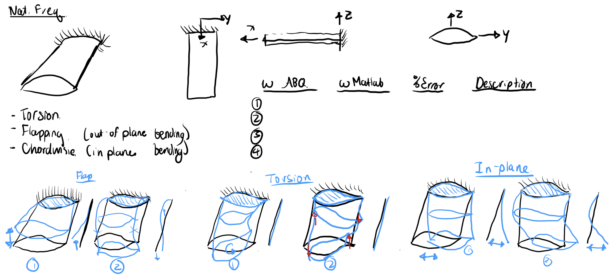
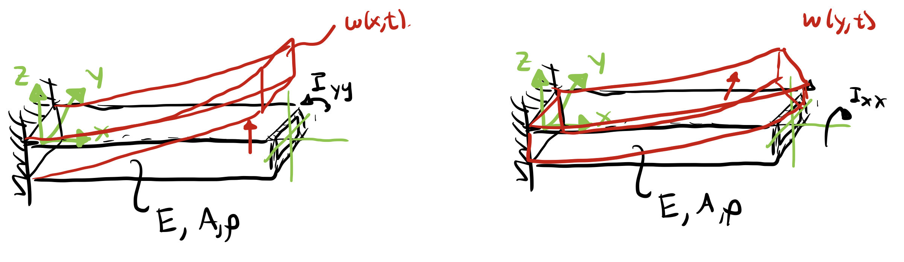
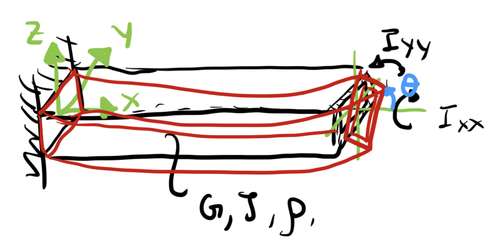
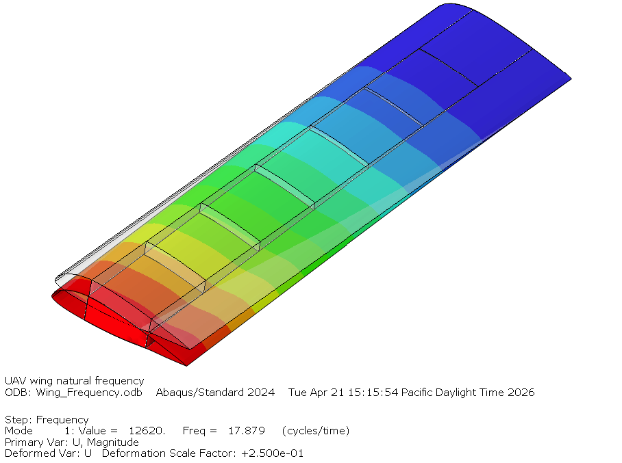
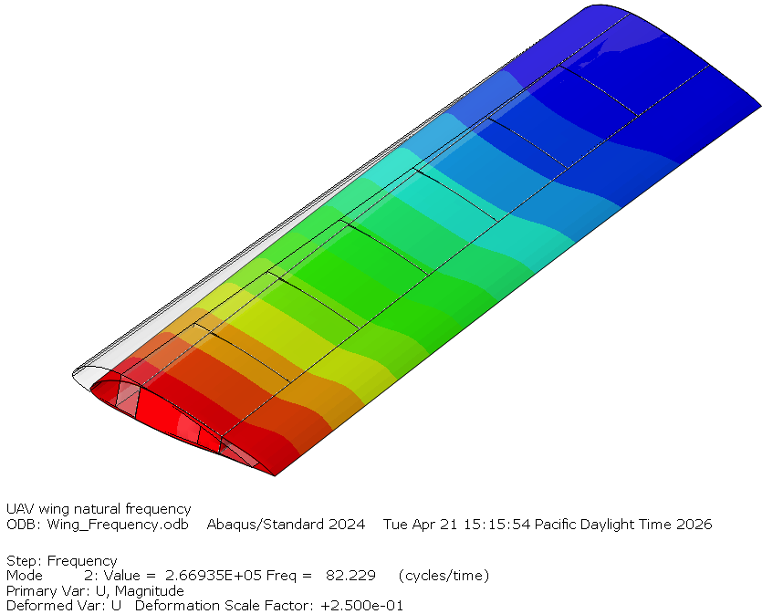
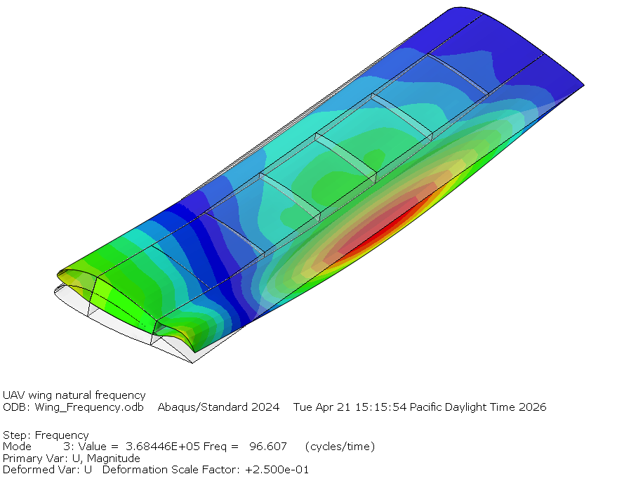
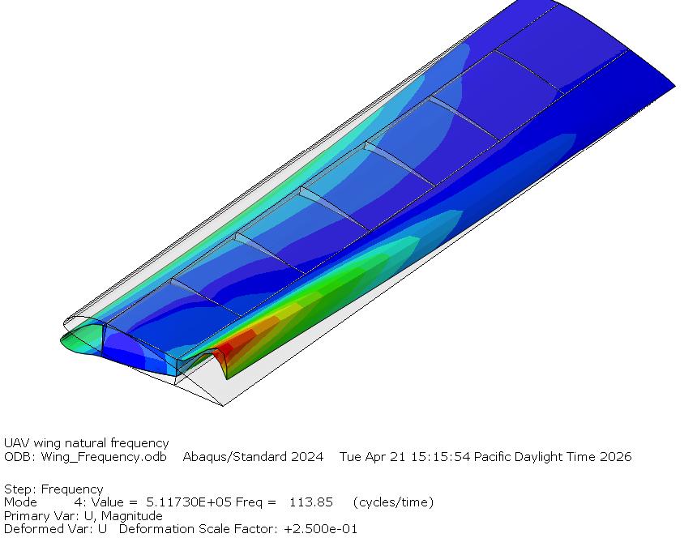

Tutorial 1: Modal Analysis of a Cantilever Uniform Wing
Overview

This tutorial walks through the analytical prediction of natural frequencies for a uniform cantilever wing modeled as a thin-walled beam. We treat the wing as having a constant cross-section along its span which lets us derive a nearly exact closed-form expressions for each vibration mode.
We work through three topics in sequence:
- Bending natural frequencies — flap and chord directions
- Torsional natural frequencies
- Cross-section properties — how to compute the geometric quantities the frequency equations need
Finally, we compare our analytical predictions against a finite element solution in Abaqus.
Part 1: Natural Frequencies of a Cantilever Beam
Both bending and torsion lead to a vibrating distributed system (a continuous beam) and the frequencies come from satisfying the governing PDE plus the boundary conditions at the root and tip.
1.1 Bending Vibration
Axis Convention

The beam runs along \(x\) (span). The cross-section sits in the \(y\)-\(z\) plane, where \(y\) is the chordwise direction and \(z\) is the flapwise (thickness) direction.
Two bending directions are of interest:
- Flap bending — displacement \(w(z,t)\) in the \(z\)-direction, resisted by \(I_{yy} = \int (z - \bar{z})^2 \, dA\)
- Chord bending — displacement \(v(y,t)\) in the \(y\)-direction, resisted by \(I_{xx} = \int (y - \bar{y})^2 \, dA\)
\(I_{yy}\) is the second moment of area measured by the spread of material in \(z\). Same with the \(I_{xx}\) is the spread of material in the \(y\) direction. In the following derivations, \(x\) will represent the axis that the beam is bending about.
The Governing Equation
The Euler-Bernoulli beam equation for free, undamped bending vibration is:
where \(E\) is Young's modulus, \(I\) is the relevant second moment of area, \(\rho\) is mass density, \(A\) is cross-sectional area, and \(w(x,t)\) is transverse displacement.
Separation of Variables
We assume the solution is separable — a spatial mode shape multiplied by harmonic time variation:
Computing the required derivatives:
Substituting into the governing equation:
Dividing through by \(\sin(\omega t)\) (valid for all \(t\)) and rearranging:
Defining the wavenumber parameter:
the ODE becomes:
The general solution is a combination of sinusoidal and hyperbolic terms:
Cantilever Boundary Conditions
A cantilever is clamped at the root (\(x = 0\)) and free at the tip (\(x = L\)):
Applying all four conditions eliminates \(C_1\)–\(C_4\) and yields the transcendental characteristic equation:
This has no closed-form solution. The first three roots are:
| Mode \(n\) | \(\beta_n L\) |
|---|---|
| 1 | 1.87510 |
| 2 | 4.69409 |
| 3 | 7.85476 |
From \(\beta_n\) to Frequency
Rearranging the definition of \(\beta^4\):
Taking the square root:
For flap bending substitute \(I = I_{yy}\); for chord bending substitute \(I = I_{xx}\). Since \(I_{xx} \gg I_{yy}\) for a flat wing, chord frequencies are always substantially higher than flap frequencies.
For a solid rectangular section with height \(h = 4\) in (flapwise) and width \(b = 20\) in (chordwise), the two second moments of area are:
1.2 Torsional Vibration
The Governing Equation

Free torsional vibration of a uniform shaft is governed by:
where \(G\) is the shear modulus, \(J\) is the torsional constant (Bredt-Batho for thin-walled closed sections), \(\rho\) is mass density, \(I_p = I_{xx} + I_{yy}\) is the polar moment of area, and \(\theta(x,t)\) is the twist angle.
Separation of Variables
We assume harmonic motion of the form:
Computing the required derivatives:
Substituting into the governing equation:
Dividing through by \(\sin(\omega t)\) and rearranging:
Defining the wavenumber parameter:
the ODE becomes:
The general solution is:
Note that unlike the bending equation — which is fourth order and requires four constants — this is second order and requires only two. The mode shapes are purely sinusoidal, with no hyperbolic terms.
Cantilever Boundary Conditions
Applying the first condition gives \(C_2 = 0\), leaving \(\Theta(x) = C_1\sin(\beta x)\). Applying the second condition:
For a non-trivial solution (\(C_1 \neq 0\)), we require \(\cos(\beta_n L) = 0\), which gives exact closed-form eigenvalues:
From \(\beta_n\) to Frequency
Rearranging the definition of \(\beta^2\):
Taking the square root:
The torsional mode ratio is exactly \(1 : 3 : 5 : 7 : \ldots\) — a direct consequence of the \((2n-1)\) factor — unlike bending modes which grow much faster due to the \((\beta_n L)^2\) dependence.
Part 2: Cross-Section Properties
The frequency equations in Part 1 require five section properties: \(A\), \(I_{xx}\), \(I_{yy}\), \(J\), and \(I_p\). This section explains how to compute each one for a thin-walled airfoil section composed of skin panels and spar webs.
The fundamental idea is to represent the cross-section as a collection of thin-wall segments. Each segment has:
- Arc length \(ds\)
- Thickness \(t\)
- Midpoint position \((y_m, z_m)\)
All section properties are built from weighted integrals along these segments.
Axis convention used throughout: \(x\) runs along the span, \(y\) runs along the chord, and \(z\) runs in the flap (thickness) direction.
2.1 Structural Area
The simplest property. For a thin-wall segment, area is just thickness times arc length summed around the entire section:
This includes all skin segments and both spar webs.
2.2 Centroid
The centroid is the area-weighted average position of the material:
Getting the centroid right matters because \(I_{xx}\) and \(I_{yy}\) must always be computed about the centroidal axes — not an arbitrary reference point.
2.3 Second Moments of Area
These measure how far the material is distributed from each neutral axis. More material far from the axis means a stiffer, higher-frequency response in that direction.
The subtraction of \(\bar{z}\) and \(\bar{y}\) inside each integral applies the parallel axis theorem automatically — it shifts every segment's contribution to the centroidal axis.
Physical note on spar webs: The front and rear spar webs sit near \(z = 0\) (the neutral axis for flap bending), so they contribute almost nothing to \(I_{xx}\). But they sit at \(y = y_\text{spar}\), well away from the chordwise centroid, so they contribute significantly to \(I_{yy}\). This is why chord stiffness is so much higher than flap stiffness in a typical wing.
2.4 Polar Moment of Area
The polar moment is simply the sum of the two bending moments:
It appears in the torsion frequency equation as the rotational inertia of the cross-section — how much the section resists angular acceleration about the spanwise axis.
2.5 Torsional Constant — Bredt-Batho Formula
For a closed thin-wall section, shear flow under torsion is uniform around the cell. The Bredt-Batho formula gives:
where \(A_\text{enc}\) is the enclosed area of the cell and \(\oint ds/t\) is the perimeter integral weighted by inverse thickness.
Enclosed area — shoelace formula
Given discrete boundary points \((y_i, z_i)\) around the cell:
Which cell to use?
This is a modeling choice with real consequences:
- Full airfoil cell: integrate around the entire closed skin contour. Uses the full aerodynamic shape and maximizes \(A_\text{enc}\).
- Inter-spar box cell: integrate only around the rectangle bounded by the two spar webs and the upper and lower skin panels between them. More conservative; this is the cell that actually carries the bulk of the torsional shear flow in a typical wing box.
The \(A_\text{enc}^2\) dependence means a larger enclosed area makes the section much stiffer in torsion — this is why hollow sections are structurally efficient. The full-skin approach will overestimate \(J\) if the nose and tail regions are structurally negligible.
Part 3: Analytical Results using MATLAB
The MATLAB script is an analytical script that estimates the wing's natural frequencies. It begins by computing cross-sectional properties — structural area, second moments of area, torsional constant, and polar moment — by numerically integrating along the airfoil profile and spar webs, treating the structure as a collection of thin-wall segments. With those section properties in hand, it applies closed-form Euler-Bernoulli beam theory to compute the first NN N natural frequencies for three independent vibration types: out-of-plane flap bending, in-plane chord bending, and torsion. The output is a simple frequency table that serves as a quick check.
Download Matlab Anlaysis: Analytical Beam Cantilever Analysis
The following material and geometric parameters define the wing cross-section and drive all downstream frequency calculations. In this case, \(I_{xx}\) is bending about \(y\) axis, and \(I_{yy}\) is bending about \(x\) axis.
Model Input:
| Parameter | Symbol | Value | Unit |
|---|---|---|---|
| Young's modulus | \(E\) | 10 × 10⁶ | psi |
| Poisson's ratio | \(\nu\) | 0.33 | — |
| Shear modulus | \(G = E / 2(1+\nu)\) | 3.759 × 10⁶ | psi |
| Weight density | \(\rho_w\) | 0.1 | lb/in³ |
| Mass density | \(\rho = \rho_w / g\) | 2.588 × 10⁻⁴ | lb·s²/in⁴ |
| Chord | \(c\) | 20.0 | in |
| Span | \(L\) | 84.0 | in |
| Skin thickness | \(t_{skin}\) | 0.040 | in |
| Spar thickness | \(t_{spar}\) | 0.060 | in |
| Front spar | \(y_{s1}\) | 5.0 (25% \(c\)) | in |
| Rear spar | \(y_{s2}\) | 14.0 (70% \(c\)) | in |
Section properties:
| Property | Value |
|---|---|
| \(A\) | 1.9783 in² |
| \(I_{xx}\) | 2.6342 in⁴ |
| \(I_{yy}\) | 64.4063 in⁴ |
| \(J\) | 5.2218 in⁴ |
| \(I_p\) | 67.0405 in⁴ |
Natural frequencies:
| Mode | Flap [Hz] | Chord [Hz] | Torsion [Hz] |
|---|---|---|---|
| 1 | 17.99 | 88.95 | 100.11 |
| 2 | 112.73 | 557.44 | 300.33 |
Part 4: Abaqus Results
4.1 Mode Identification
The Abaqus script programmatically builds a complete 3D shell finite element model of the wing. It constructs the wing as four distinct structural components — a single closed airfoil skin extruded along the span, a front and rear spar web running the full span, and a set of N evenly-spaced inter-spar ribs — then assembles them, translates each component into its correct position, and connects everything using kinematic tie constraints at the shared edges. A cantilever boundary condition is applied at the root via a reference point with kinematic coupling, and a Lanczos eigenvalue extraction step is configured to extract the first 10 natural frequencies.
Download Abaqus Anlaysis:
Execute it either in Abaqus CAE command line execfile("wing_cantilever_freq_analysis.py") or in Abaqus Commands "abaqus cae noGui="wing_cantilever_freq_analysis.py""
 |
 |
| Flap — Mode 1 Abaqus: 17.879 Hz · MATLAB: 17.99 Hz |
Chord — Mode 1 Abaqus: 82.229 Hz · MATLAB: 88.95 Hz |
 |
 |
| Flap — Mode 2 Abaqus: 96.607 Hz · MATLAB: 112.73 Hz |
Torsion — Mode 1 Abaqus: 113.85 Hz · MATLAB: 100.11 Hz |
4.2 Section Property Comparison
Once you have ran the analysis you can try extracting the section properties from the odb, similarly executing this file:
| Property | MATLAB | Abaqus | Diff | Note |
|---|---|---|---|---|
| \(A\) (in²) | 1.9783 | 1.6576 | +19% | Discretized arc lengths inflate the MATLAB perimeter estimate |
| \(I_{xx}\) (in⁴) | 2.6342 | 2.6083 | +1% | Excellent agreement |
| \(I_{yy}\) (in⁴) | 64.4063 | 57.6453 | +12% | Follows from area overestimate |
| \(J\) (in⁴) | 5.2218 | 8.0534 | −35% | Full-skin Bredt formula underestimates; Abaqus shell elements capture multi-cell behavior |
| \(I_p\) (in⁴) | 67.0405 | 60.2536 | +11% | Follows from \(I_{yy}\) overestimate |
Part 5: Comparing Results
5.1 Sources of Discrepancy
| Mode | MATLAB [Hz] | Abaqus [Hz] | Diff |
|---|---|---|---|
| Flap 1 | 17.99 | 17.879 | +0.6% |
| Chord 1 | 88.95 | 82.229 | +8.2% |
| Flap 2 | 112.73 | 96.607 | +17% |
| Torsion 1 | 100.11 | 113.85 | −12% |
Each difference has a physical cause rooted in a specific analytical assumption.
Area overestimate (+19%): The skin is discretized as straight segments between coordinate points, which overestimates arc length and therefore mass. A coarser coordinate table makes this worse; a finer one reduces it.
\(I_{yy}\) overestimate (+12%): The same discretization slightly misplaces segment centroids. Since \(I_{yy}\) weights by \((y_m - \bar{y})^2\), small position errors are amplified by the squared distance.
\(J\) underestimate (−35%): The single-cell Bredt-Batho formula treats the entire skin as one torsion cell, ignoring the shear flow carried by the spar webs between cells. Abaqus enforces full section compatibility and captures this naturally, producing a \(J\) that is 35% higher — and since \(f_\text{torsion} \propto \sqrt{J/I_p}\), this directly explains the 12% gap in torsional frequency.
Flap Mode 1 vs. Mode 2: The 0.6% agreement on Mode 1 degrades to 17% on Mode 2 because higher modes have shorter effective wavelengths and are more sensitive to how stiffness and mass are distributed along the span, not just their totals. Treat higher-mode predictions as order-of-magnitude estimates.
5.2 Reading the Participation Factors and Identifying Modes
Abaqus orders modes strictly by frequency regardless of type. The participation
factors in the .dat file identify what kind of motion each mode produces —
they measure how strongly a unit base excitation in each direction would excite
that mode. With \(x\) = span, \(y\) = chord, \(z\) = flap, the signatures are:
- Large \(z\)-component and \(\theta_y\)-rotation → flap bending
- Large \(y\)-component and \(\theta_z\)-rotation → chord bending
- Large \(\theta_x\)-rotation → torsion
Compare factors within a single mode row, not across the table. Higher modes tend to have smaller, more distributed factors — look for the relatively dominant direction rather than an obvious peak.
If a mode shows no clear dominant direction, it is likely a local plate mode — the skin panels between the spars vibrating independently of the global beam. These appear in shell FE models but cannot be predicted by the beam model, which assumes the cross-section remains rigid in its own plane. They are not a modeling error; they are simply a different class of behavior.